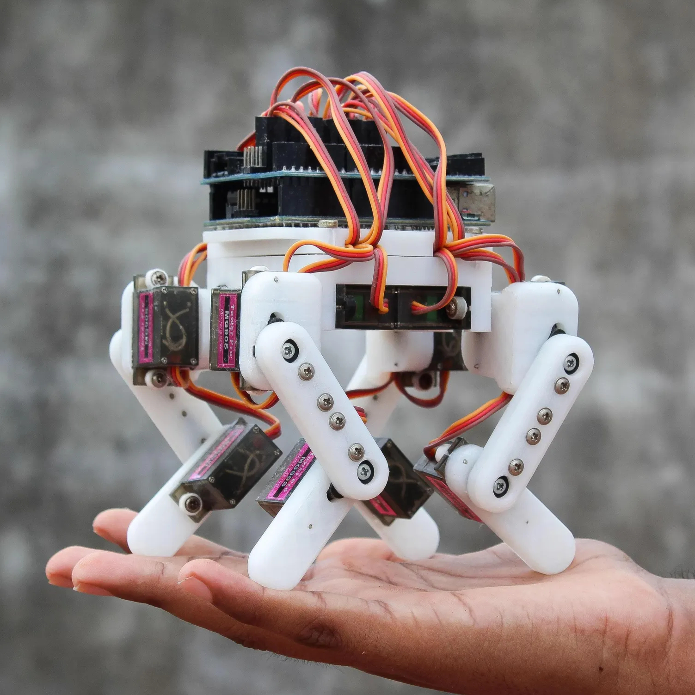
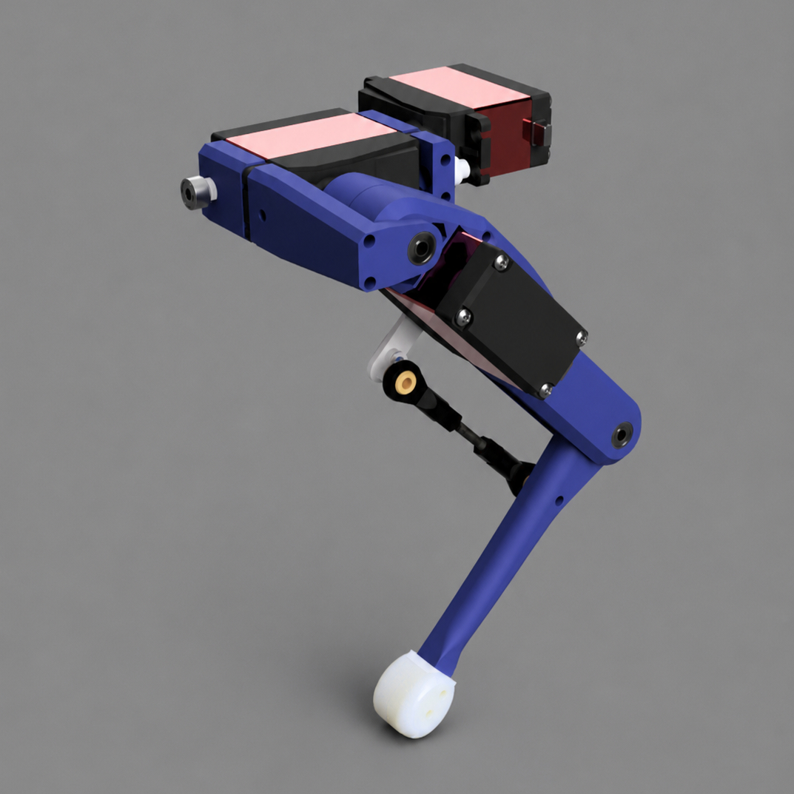
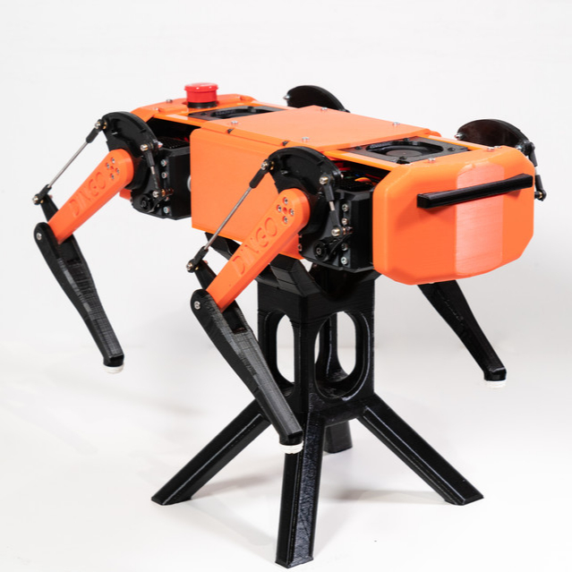
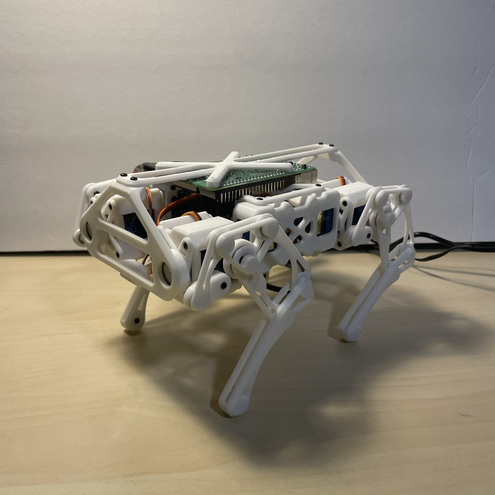
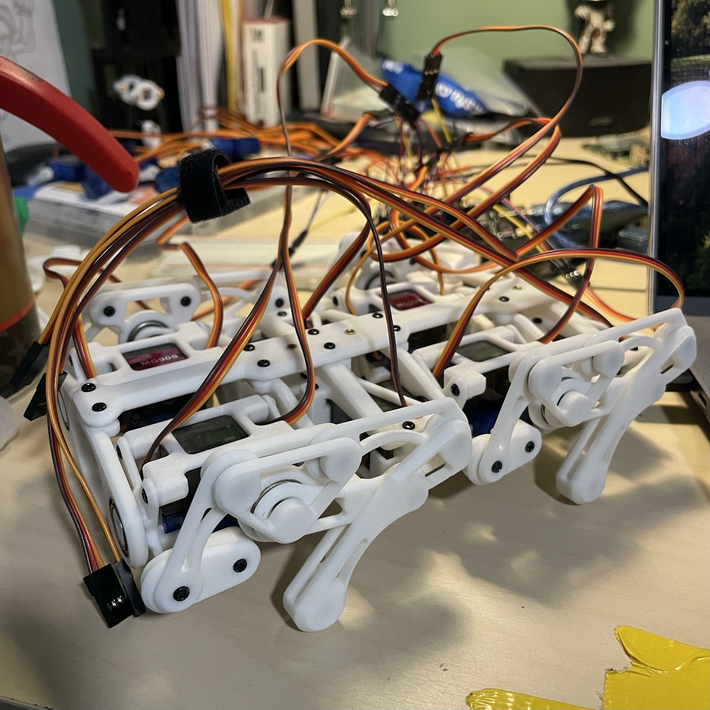
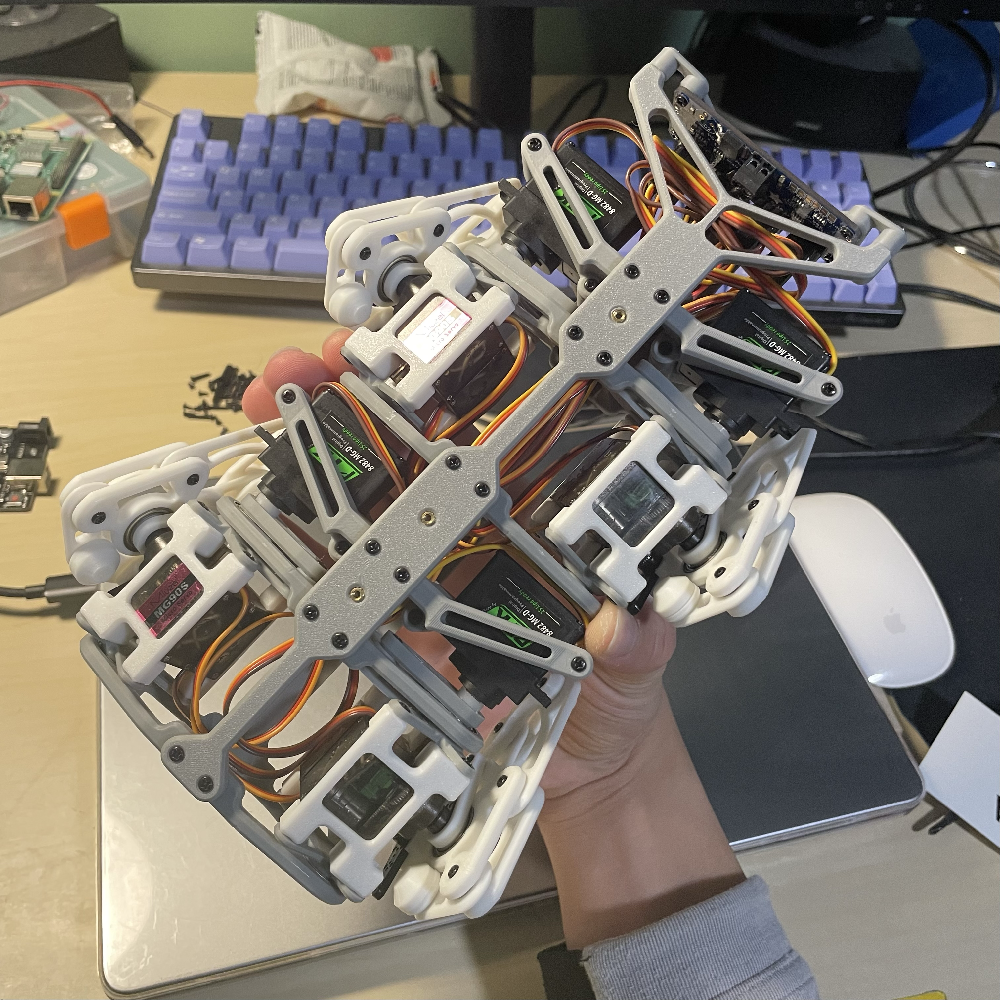
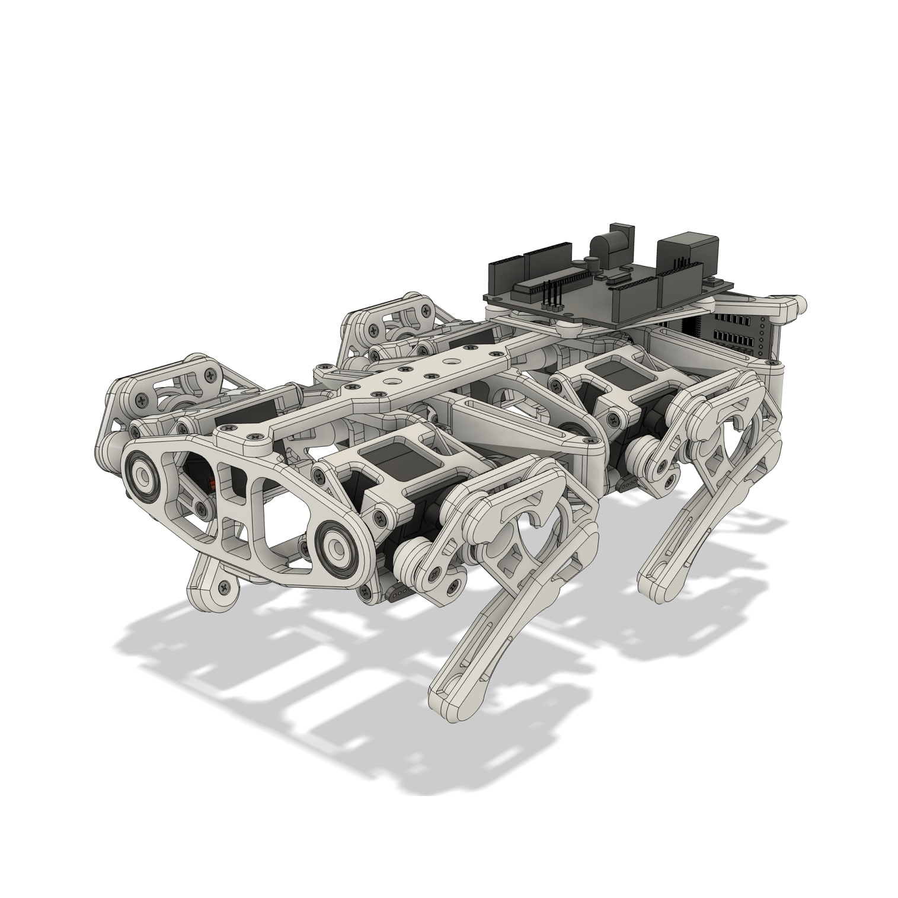
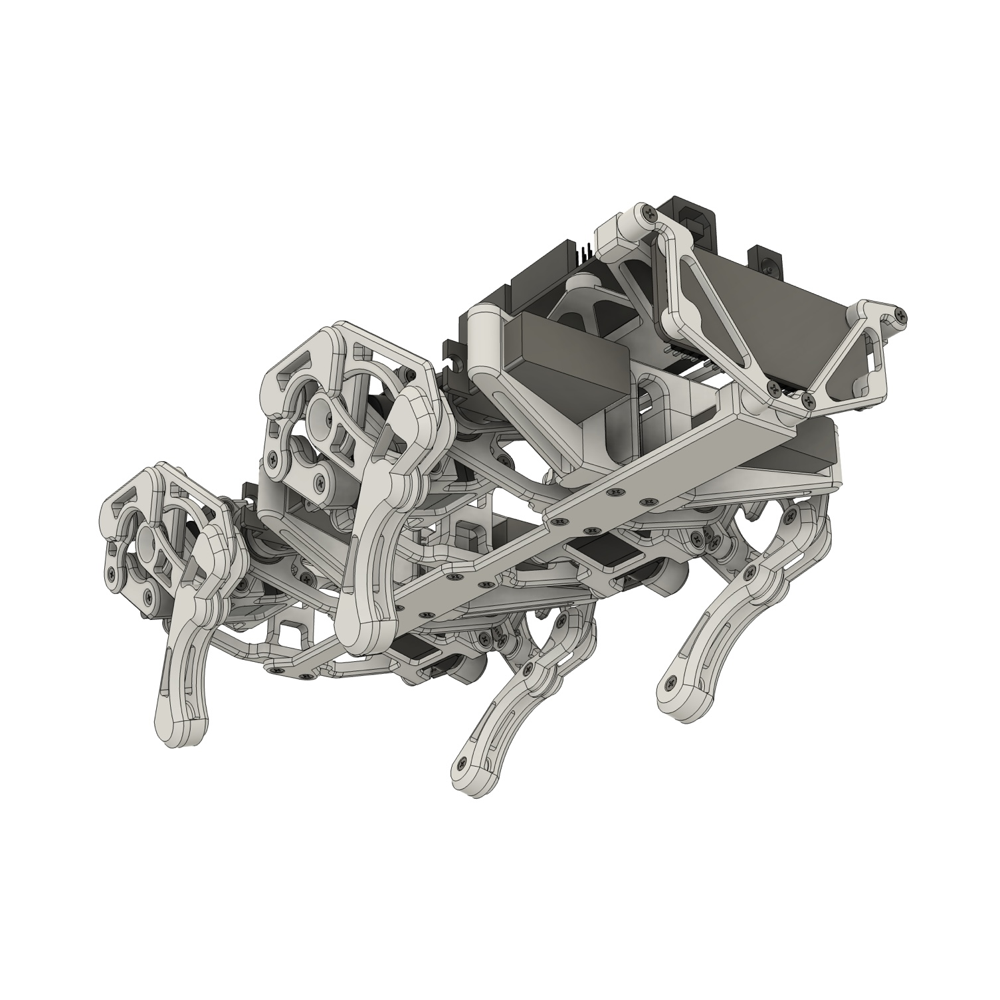
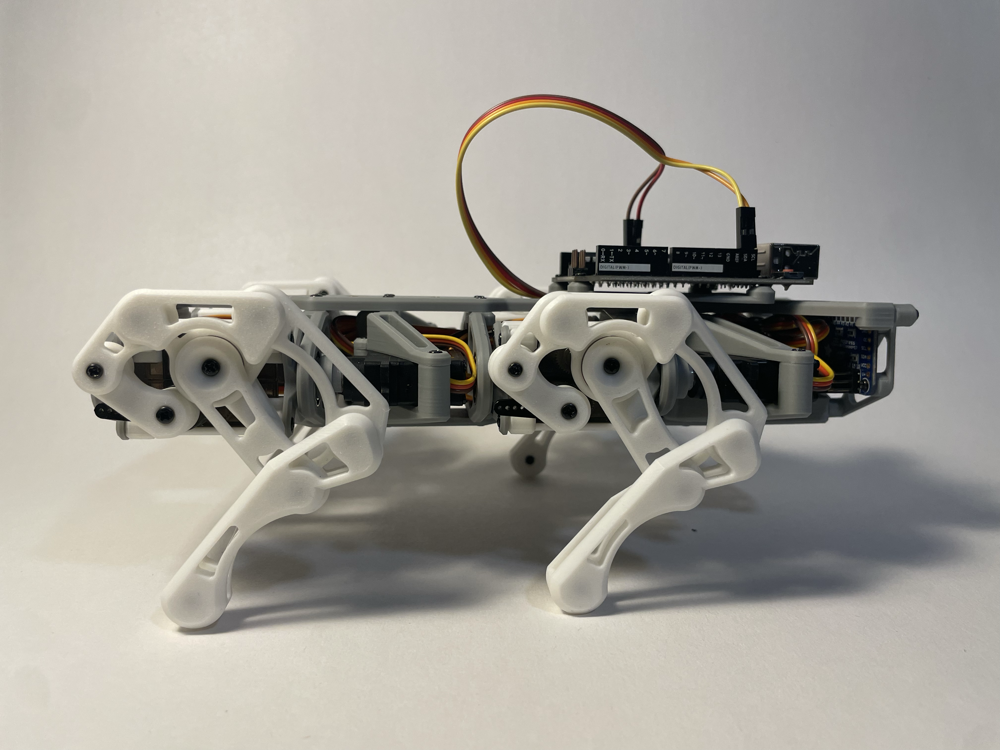

Technical write-up
↑ OverviewAfter building a robotic hand, I wanted to transition from a stationary mechanism to a standalone, dynamic robotic system. Inspired by Boston Dynamics' Spot, I set out to design and build my own quadruped robot from scratch.
1. Mechanical Design
1.1 Leg Topologies
The first design challenge was developing the leg architecture. To constrain cost and complexity, all joints were required to use standard hobby servos. Since each leg required three degrees of freedom (two in the sagittal plane, one at the hip for roll), I evaluated three primary actuation architectures for the thigh and tibia:
| Type | Advantages | Disadvantages |
|---|---|---|
| Direct Drive | Zero linkage backlash; simple geometric inverse kinematics; high transmission efficiency | High distal mass; maximizes swing-phase rotational inertia; requires higher torque at the hip |
| Offset Actuator | Simpler kinematics compared to full closed-loop linkage; marginally reduced distal mass | Bulky form factor; requires higher torque at the hip; significant mass mid-limb |
| Co-located Actuators (6-Bar Linkage) | Actuator mass is concentrated entirely at the hip; significantly reduced rotational inertia; highly compact packaging | High mechanical complexity; potential for linkage backlash/friction; nonlinear torque delivery (cosine losses) |



Decision: I chose the 6-bar linkage architecture. Co-locating the thigh and tibia actuators at the hip concentrated nearly all leg mass close to the body, significantly reducing swing-phase inertia and the torque demand placed on the hip roll actuator. Given the limited torque capabilities of hobby servos, this reduction in rotational inertia outweighed the additional mechanical complexity and nonlinear transmission characteristics introduced by the linkage system.
1.1.1 6-Bar Linkage and Force Optimization
To actuate the tibia from the hip, I implemented a variation of a Watt’s linkage. A critical design challenge was sizing the linkage lengths to maximize torque delivery across the leg's effective range of motion (ROM).


I optimized the linkage dimensions to maintain a transmission angle as close to 90° as possible during the stance phase. Since ground reaction forces are only present while the foot is in contact with the ground, maximizing force transmission in this region provided the greatest improvement in overall locomotive performance. Furthermore, this linkage architecture provided a distinct kinematic advantage: joint decoupling. In a standard serial chain, moving the thigh alters the absolute angle of the tibia, creating a coupled system. The parallel nature of the 6-bar linkage largely decoupled radial extension from the angular sweep of the leg, simplifying the inverse kinematic control loop.
However, because packaging constraints prevented the linkage pivot from being perfectly concentric with the servo’s axis, the mechanism suffered from slight cosine losses. The effective lever arm changed as a function of the joint angle, meaning torque delivery was non-linear at the extreme ends of the leg's flexion and extension. This informed actuator selection to ensure sufficient torque margin near the boundaries of the operating workspace.
1.2 Dynamic Loading and Actuator Sizing
The first iteration exposed a mismatch between the leg geometry and the available servo torque. The hip-roll actuators struggled most during walking, frequently stalling and experiencing drivetrain wear. For later revisions, I shortened the legs to reduce loading and upgraded the hip-roll servos.
1.2.1 Establishing the Torque Budget
The final design used eight smaller servos for thigh and tibia motion and four higher-torque servos for hip roll. I used their advertised stall ratings as a starting point, with a conservative assumed operating allowance of 25% to avoid designing around stall torque. This was a preliminary sizing assumption, not a verified continuous-duty rating.
| Specification | Thigh / Tibia | Hip Roll |
|---|---|---|
| Quantity | 8 | 4 |
| Mass per servo | 13.4 g | 46 g |
| Advertised stall torque | 0.235 N·m (6 V) | 0.637 N·m (6 V) |
| Assumed torque allowance | 25% of stall | 25% of stall |
| Preliminary torque budget | 0.059 N·m | 0.159 N·m |
1.2.2 Estimating Ground Reaction Forces
I used the two-leg support phase of a trot as a simple loading case. With an estimated assembled mass of approximately 1.0 kg and equal vertical loading across the two supporting legs, the force per foot is:
Dividing each preliminary torque allowance by this force gives an equivalent direct-drive moment arm: approximately 12 mm for a sagittal-plane servo and 32 mm for a hip-roll servo. These are comparison values, not allowable link lengths: the actual servo torque depends on foot position, joint configuration, and the six-bar linkage’s mechanical advantage.
Although the model neglects impact loading, body acceleration, and unequal leg forces, it made the limited torque margin clear and motivated a shorter, more compact leg.
1.2.3 Selecting the Leg Dimensions
Working backward from these torque constraints, I reduced the femur and tibia lengths to 35 mm each. Shorter links limited the possible foot-to-joint moment arms, reduced swing inertia, and fit the compact chassis, at the expense of reachable workspace. The resulting theoretical maximum planar reach was 70 mm.
The final geometry was an engineering compromise rather than a complete torque optimization. A rigorous check would require the linkage Jacobian across the stance workspace and measured servo performance under repeated loading.
1.3 Chassis Iterations and System Integration
Building this quadruped was a highly iterative process. The platform underwent three major design iterations, each addressing limitations identified during testing of the previous revision.
| Version | Key Features | Identified Issues | Design Iteration/Fix |
|---|---|---|---|
| V1 | Initial six-bar linkage; inverted Raspberry Pi mount | Oversized legs; hip-roll servos stalled; inaccessible electronics and poor wiring | Shortened legs; revised linkage geometry; reduced chassis size |
| V2 | Compact leg geometry and chassis | Difficult assembly; crowded wiring; rearward center of mass | Improved cable routing; repositioned electronics |
| V3 | Internal cable channels; improved mass distribution | Smaller hip-roll servos still struggled during walking | Upgraded hip-roll servos; refined printability and assembly |



2. Inverse Kinematics and Gait Generation
Given the hardware constraints with open-loop servos, control of the quadruped was strictly kinematic and feedforward.
2.1 Single-Leg Inverse Kinematics
Each leg has three degrees of freedom: a hip roll joint and the two sagittal-plane joints (femur and tibia) driven by the co-located 6-bar linkage. The inverse kinematics solve for these three angles given a desired foot position expressed in the leg’s hip frame.
It’s worth noting that the planar solver returns an abstract tibia joint angle, not the angle seen from its driving servo. This non-linear behaviour is due to the 6-bar linkage. A final transmission mapping was needed to convert the desired joint angle into the corresponding servo angle.
2.2 Global Body Pose Control via Homogeneous Transforms
Per-leg IK only positions a single foot, but the robot needs to coordinate all four legs to control its overall posture. To handle this, I used homogeneous transformation matrices to compose rotation (yaw, pitch, roll) and translation (x, y, z) as a single 4×4 operation.
The key idea is that the feet stay planted in the world while the body moves above them. Each foot target was expressed relative to the body center, transformed by the inverse of the desired body pose, then returned to its hip frame for the single-leg IK solver.
2.3 Trot Gait and Step Trajectory Generation
The robot walks using a standard trot gait, with diagonal leg pairs moving in antiphase. This alternated support between two legs and allowed the robot to walk using feedforward control.
Each foot’s trajectory was split into stance and swing phases. Through testing, I found sinusoidal interpolation produced smoother motion and made step height and frequency easy to adjust. I could also change gait speed by varying the number of interpolation points per cycle, at the cost of smoothness.
A discovery I made while tinkering with gait timings was the importance of where the stance stroke is centered. My first trajectories were centered on each leg’s neutral standing position, which placed the average contact point behind the hips and shifted the effective center of mass rearwards, making the quadruped back-heavy. Biasing the stance phase forward of neutral recentered the load and noticeably improved stability.
3. Electrical and Software Integration
Electronics and software were supporting systems rather than the focus of this project, so the implementation prioritized simplicity and reliability using off-the-shelf components.
3.1 Power and Electronics
Two 2S LiPo batteries powered the robot through a buck converter supplying separate servo and logic power rails. Twelve hobby servos were controlled through a PCA9685 PWM driver over I²C. While early revisions used a Raspberry Pi, the final design transitioned to an Arduino since the workload was simple and didn’t require a full Linux system. Separating the high-current servo supply from the logic rail prevented brownouts during large transient loads.
3.2 Software and Simulation
Control software followed an iterative workflow: gait generation -> body-pose transform -> inverse kinematics -> servo commands. It also included a calibration file that mapped each kinematic zero to its servo’s commanded pulse width. The pipeline was first developed and tuned in Python, then ported to run directly on the microcontroller in the final iteration.
To reduce hardware debugging time, I built a lightweight 3D kinematic simulator in Matplotlib that implemented the same kinematic model as the robot. This let gait trajectories, workspace limits, and kinematic errors be validated in software before testing on hardware.
4. Retrospective and Lessons Learned



This was my first dynamic robotic system and highlighted the gap between a mechanism that poses correctly and one that moves well. It was rewarding to watch the platform walk, but several limitations became apparent:
- Closing the control loop: The single biggest limitation was open-loop control with no force or inertial feedback. Adding current or torque sensing and fusing an IMU would enable an active and optimized gait policy.
- Improving structural stiffness and overall quality: Compliance in the 3D-printed components, joints, and hobby servos reduced system accuracy. Higher-quality actuators and stiffer, possibly machined components would improve performance.
- Increasing foot traction: The printed feet frequently slipped during walking. Adding overmolded silicone foot pads would increase grip and improve gait stability.
- Designing for integration: The final quadruped lacked a polished A surface and didn’t integrate its hardware components well. I’d also love to add easily swappable battery ports and proper IMU mounting.
I ended up handing this quadruped off to my friend, Ethan Woo, who used it to develop RL simulation and control policies for movement. His GitHub repository can be found here: quadrupedal-sim